Setting up SDL 2 on iOS with XCode 9.2
Last Updated 1/21/18
1) Download the SDL2 source. Not just the development libraries you use for desktop development, the full source. You can find the full source on this page.
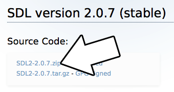
2) Extract the folder inside of the archive we downloaded to an easily accessible directory that is ideally dedicated to iOS development. For this tutorial we will be putting everything in "~/ioslib".
After extracting the SDL source you should have it at "~/ioslib/SDL2-2.0.7/" (path will vary depending on your SDL version). Copy the SDL iOS project template located at "~/ioslib/SDL2-2.0.7/Xcode-iOS/Template/SDL iOS Application" to "~/ioslib/SDL2-2.0.7/SDL iOS Application"
3) Open the template project inside of "~/ioslib/SDL2-2.0.7/Xcode-iOS/Template/SDL iOS Application". Inside you'll see a broken reference to the SDL source project. Delete it:
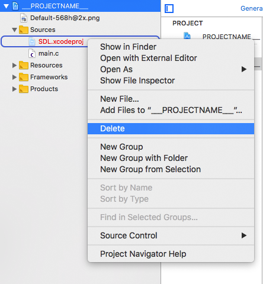
And then add the SDL source project located at "~/ioslib/SDL2-2.0.7/Xcode-iOS/SDL/SDL.xcodeproj"
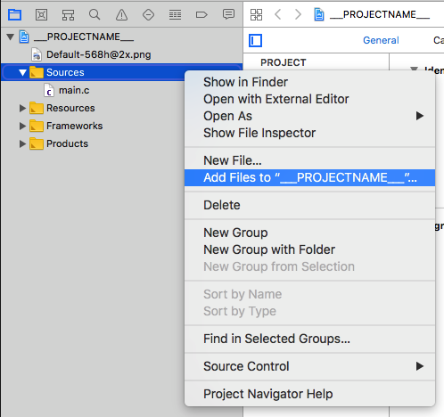
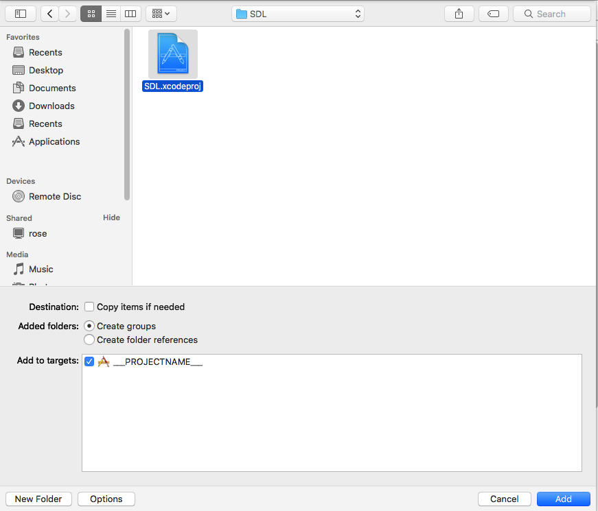
Build the application (command+B) and you should get an error:
entry point (_main) undefined
4) To fix the undefined main we need to link the project against SDL. Set the build target to libsdl and build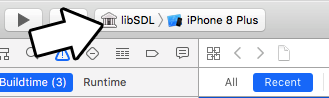
Then set the target back to the original project, select the original project, go to Build Phases, and go to Link With Libraries
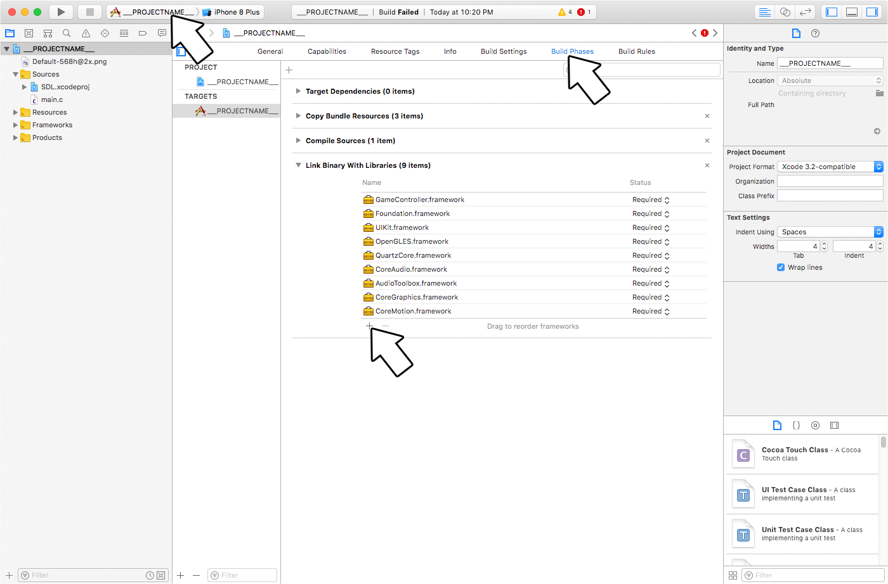
And select the libSDL library we compiled
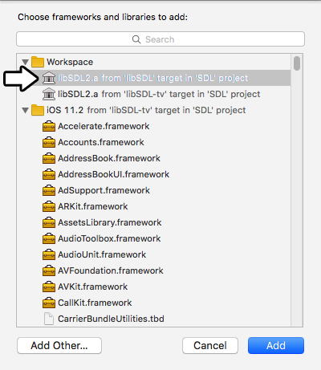
Build again and you'll get some new errors.
5) We just got a bunch of undefined symbol errors regarding AVAudioSession. To fix that, link with the AVFoundation framework
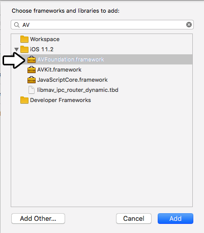
6) The project should now build and run with the default source. We want to use our own source code so download the source for lesson 52. Extract the folder inside to your development folder and then delete the default source from the project and add the tutorial source to the project.
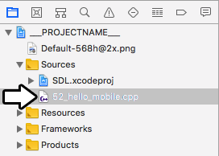
7) If you try to build the compiler will complain that it can't find SDL.h. To fix this add the include folder from the SDL source ("~/ioslib/SDL2-2.0.7/include") to the sources as a group.
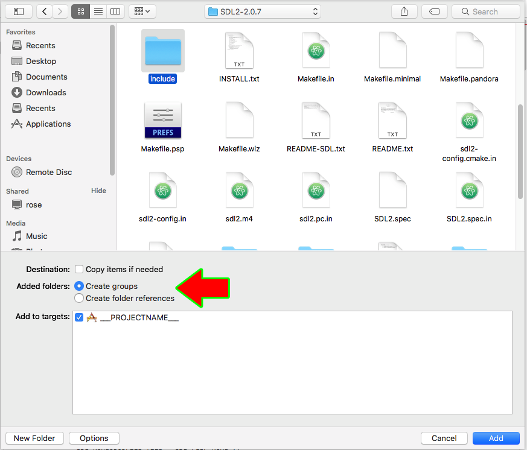
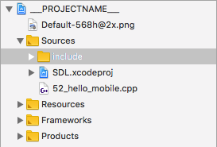
And don't forget to change
#include <SDL.h>
to#include "SDL.h"
Now the project should compile and run, but it will crash.8) The reason this app will crash is because it can't find the resource files. To add them, add new files to the resources group and select the folder with our demo files. Make sure to add the folder as a folder reference and not a group!
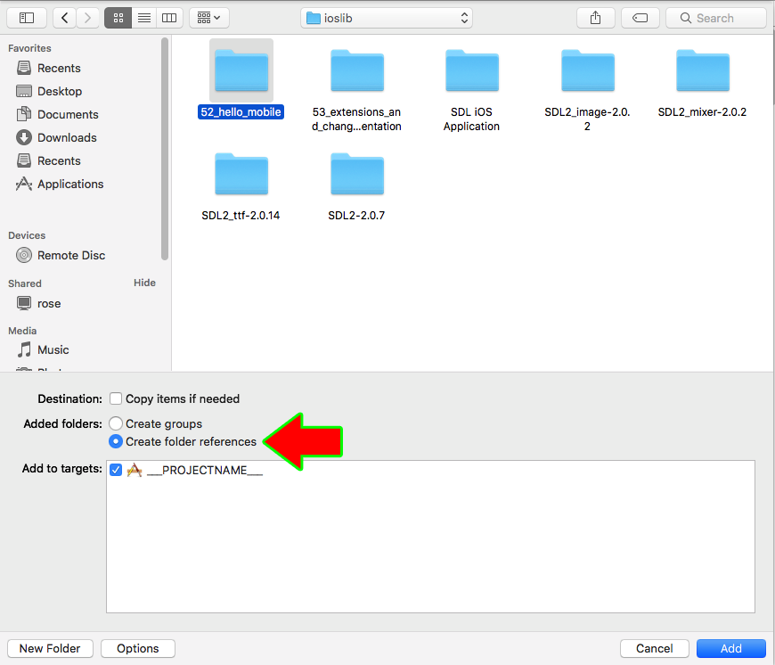
If your app is trying to load "52_hello_mobile/hello.bmp", it needs to be in the resources folder in a "52_hello_mobile" folder reference:
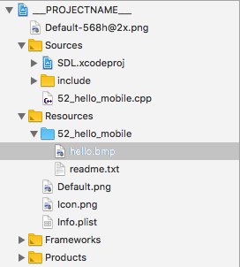
Now build and run your application. The simulator can take up to a minute to boot and run so give it time. With the application building and running, it's time to go over the source code.